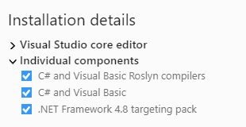
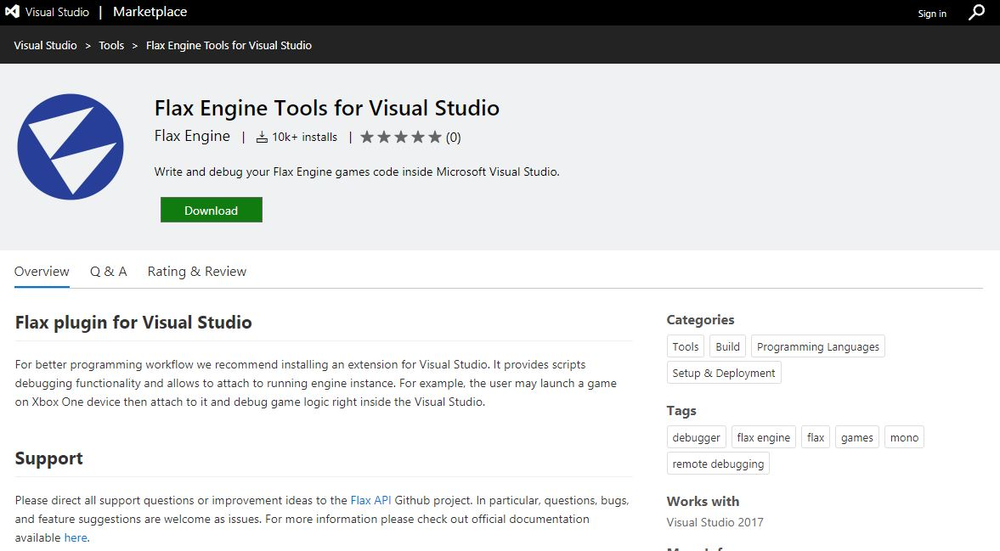
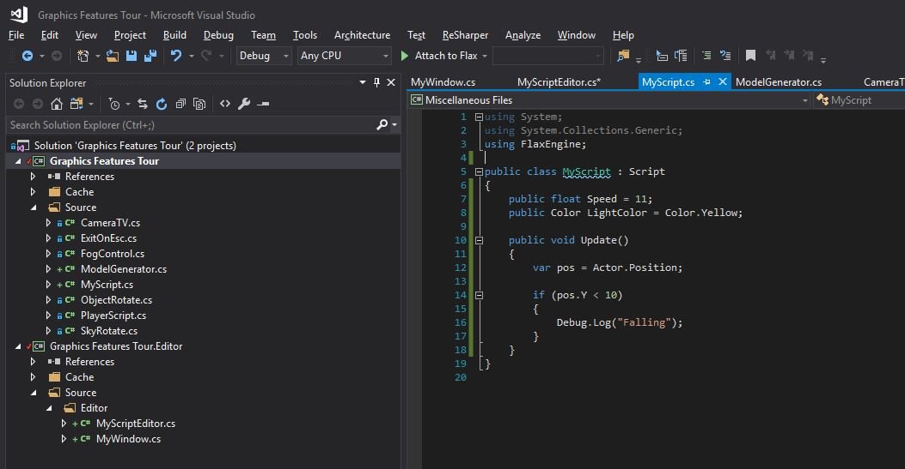
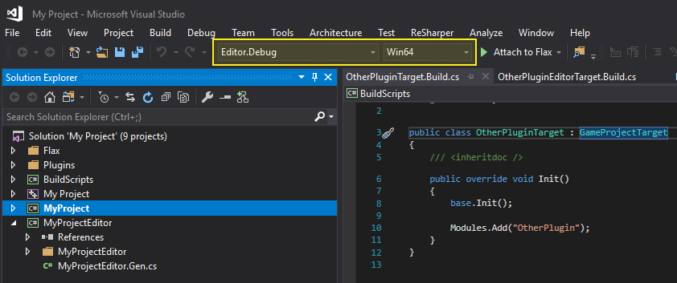
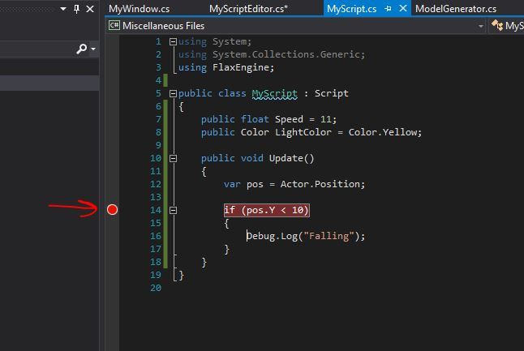
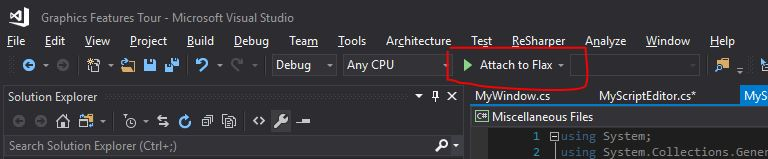
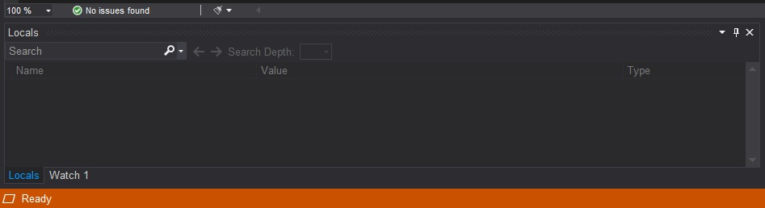
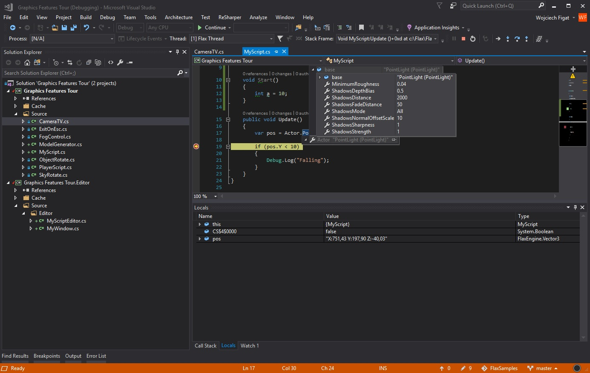

Visual Studio
You can download Visual Studio here. We support Visual Studio 2017, Visual Studio 2019.
Flax requries the following components to be installed in order to support C# scripts debugging:
- C# and Visual Basic Roslyn Compilers
- C# and Visual Basic
- .NET Framework 4.8 targeting pack (or any other .Net 4.5 or newer framework)

For C++ scripts debugging platform-dependant toolset is required (eg. Win10 SDK and v141 toolset on Windows).
1. Install Visual Studio plugin
Download and install Flax Engine Tools for Visual Studio which is requried to debug game scripts right inside the VS.

2. Attach script to actor
To debug script code it has to be attached to the actor in the scene. Simply drag and drop it into the selected actor properties area.

3. Open script in Visual Studio
Double-click on a script item and wait for the IDE to show up.

Ensure to pick a proper solution configuration eg. Editor.Development and select platform Win64.

4. Add a breakpoint
Click on a left side of the code editor to assign a breakpoint to the line. Red dot should be added as shown in the picture below.

5. Attach to Flax
Press the Attach to Flax button with a green arrow to connect Visual Studio to Flax Editor. Visual Studio should enter a debugging mode and the bottom of the IDE will remain orange. This signifies Visual Studio is ready for debugging.


6. Start a game
Go back to the Flax Editor and press the Play button to start a game. Then script OnUpdate() function will be called and assigned breakpoint hit.

7. Debug your code
Now you can use all Visual Studio debugging features to verify state of the variables and test your code.

For more information about debugging in Visual Studio, see the VS documentation.